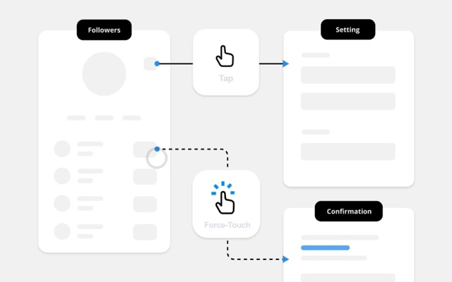

Human-Factors Interface Design
Alzheimer's Product Design

Educational Game Design

CAD Hopper

Swimmer Safety Device

Ethical Product Finder

Preventable lifestyle diseases caused by dietary habits plague many Americans and other global citizens. David Zhu and I aimed to alleviate those struggles by making it easy for people to develop healthy eating routines.
Food-tracking applications are time-consuming because they require users to measure and enter their foods manually. David and I designed an app that would make understanding users individual food habits easier.
Along the way, I realized that making dietary change is more than a matter of food-logging. It also involves emotional friction. The mobile applications available today focus more on the food than the person. I baked features into our app that incorporate human psychology, emotions, and motivation to help people achieve their desired changes.
I like to use my ability to merge technology and human psychology to make it easier for people to become healthier, safer, and happier. I hope to apply these skill sets to apps focused on time well spent and better design in smart cities.
Read more about the project on Behance.
David Zhu and I aimed to alleviate loneliness and isolation in urban settings by making it easier to find a community.
City stress and the lack of human connections make cause a 21% increased risk of anxiety disorders and a 39% increased risk of mood disorders. The problem will compound as people move increasingly away from their hometowns and into cities. The UN predicts there will be over 9 billion people in the world by 2050, 70% of whom will live in cities.
The primary services available to people moving to a new city advertise for space but disregard the importance of community. David and I decided to research why no one had solved such a widespread issue. We realized that affordable and healthy living arrangements involved complicated systems of economics, politics, culture, urban planning, and technology processes.
I researched past and current solutions, met with local leaders and uncovered intricate layers of the housing problem. My research gave me a chance to contemplate solutions which could be successful in the context of an entire society.
I use my ability to analyze intricate societal systems from the perspective of various disciplines to design solutions for societal issues. I hope to help cities and social organizations architect solutions that can make a real change to significant problems.
To read more about the project, view the formal write-up on Behance.
To ensure non-traditional students can succeed, a team of consultants and I helped close the gap toward higher education.
Acera is a K-8 school, giving students strong foundations for the modern world. It recognizes that rote memorization models, created for the industrial era, no longer apply to modern work-life. Instead, Acera prioritizes creativity, science, and leadership (and even emotional self-awareness). Students who graduate are prepared and enthusiastic but need to make it into a school for secondary education. Acera does emphasize standardized tests, which means that when higher education institutions judge Acera students based on tests alone, those schools do not recognize Acera students' true merit.
I realized that the problem was not with the Acera students, but with the education system. Most education establishments are steeped in traditional test-taking methods and lack awareness about how Acera students stack up against their peers.
To raise awareness throughout the education system about the Acera students’ strong ability, I assisted building a brand for the Acera school. The consultants and I made branding materials which Acera could use to pave a pathway for their students' success. Since my project, Acera has built many new partnerships over the past several years and continued to grow their credibility and success.
I strive to aid organization missions by crafting brand messaging that urges listeners to take action. I like to use my communication ability to help social startups gain traction with their audience, cultivate the talent they need to grow, and develop partnerships that will benefit their business.
You can read more about the project on Behance.